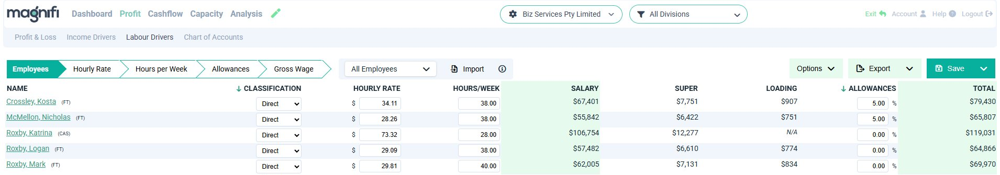
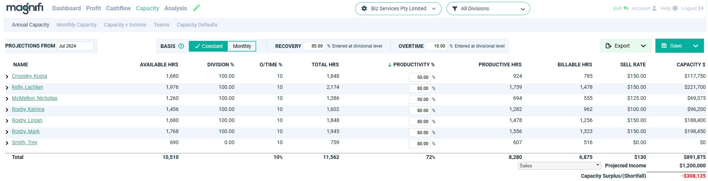
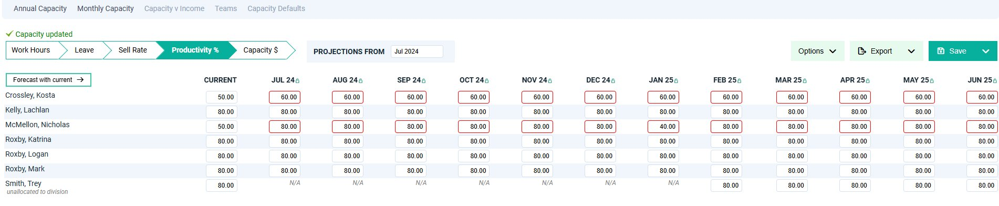
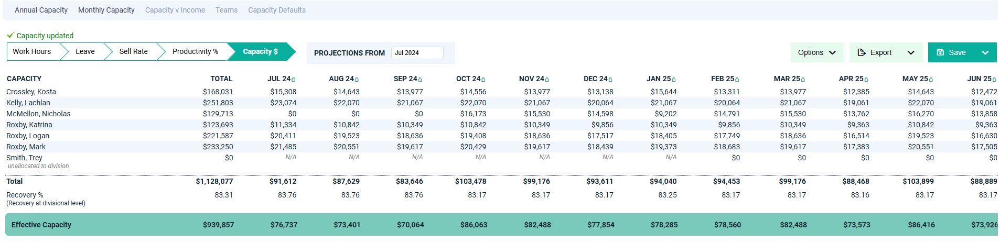
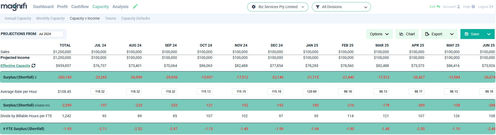
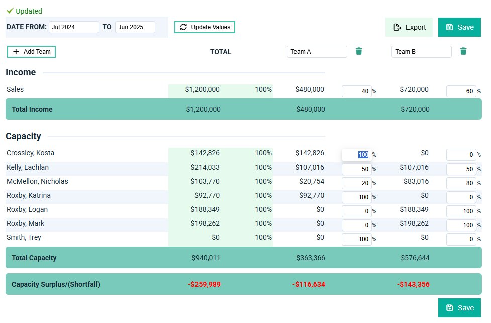
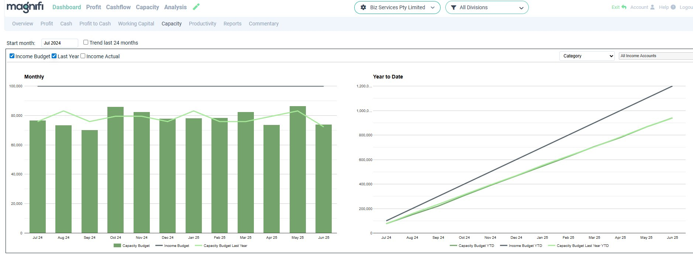

Most forecasting tools stop at Profit, Cashflow and Balance Sheet. Magnifi adds a fourth: Capacity. It's the only forecaster that tells you whether your team can actually deliver the income you're planning to earn.
Magnifi calculates each employee's billable capacity in dollars — from their hours, productivity, recovery rate and charge-out rate — and compares the total to your projected income to show a monthly surplus or shortfall. All connected to your P&L, cashflow and balance sheet.
In a service business, people are the product. Every dollar of revenue depends on someone's hours, skill and charge-out rate. Yet most forecasting tools treat headcount as a cost — not as the engine of income.
When capacity and income are in balance, profit is maximised. Too much capacity means idle overhead; too little means burnout and unmet demand. Magnifi makes that balance visible — and keeps it connected to every other part of your forecast, so a change to any employee flows through automatically.
Capacity concepts & calculations — Help CentreCapacity planning matters most when your team's time is what you sell. If you bill for hours, expertise or service delivery, your people are both your biggest cost and your engine of revenue — and knowing whether their capacity matches your income targets is the difference between a good year and a stressful one.
You can still use it. For businesses where income includes both labour and materials — construction, manufacturing — flag the relevant income accounts as capacity-building and Magnifi works out an overall sell rate, so you can project total team capacity for workforce planning even where labour income isn't reported separately.
Capacity Planning builds up from your employee data in a clear sequence — each step feeds the next, and every number stays connected to the rest of your forecast.
Magnifi imports your employees directly from Xero — bringing their hourly rate, hours per week, classification (Direct or Overhead), super and allowances with them. No manual re-entry. If you're not on Xero, import from Excel instead.
Once your team is in, set organisation-wide defaults for Productivity %, Recovery %, Sell Rate, Overtime % and Leave % under Capacity Defaults. These flow through to every employee automatically — you only override the inputs that differ for specific people.
Labour Drivers — Help Centre
← Swipe to see full table
Annual Capacity shows each employee's available hours, productive hours, billable hours, sell rate and Capacity $ — all in one grid, flowing left to right so you can see exactly how each number is built. Adjust Productivity % or Sell Rate per person, or apply a value across the whole team in one step.
The Capacity Surplus/(Shortfall) at the bottom compares your team's total capacity to your projected income — your first clear answer to the question the page started with.
Annual Capacity — Help Centre
← Swipe to see full table
For businesses with seasonal patterns, new hires ramping up, or rates that change during the year, Monthly Capacity lets you vary the inputs month by month for each employee. A step-through wizard — Work Hours → Leave → Sell Rate → Productivity % → Capacity $ — walks through each input in sequence. Annual Capacity reflects the monthly totals automatically.
Monthly Capacity — Help Centre
← Swipe to see full table

← Swipe to see full table
The final step brings it all together. Capacity vs Income compares your team's effective capacity to your projected income month by month — expressed in dollars, billable hours and FTE equivalents — so you have every angle on the same question: are we set up to hit our targets?
Capacity vs Income — Help CentreMagnifi compares your team's effective capacity to your projected income each month and translates any gap into billable hours and FTE equivalents — so you can see not just whether there's a shortfall, but how big it is in practical terms.
You can also switch to a cost-based view, comparing your target labour cost % against your budgeted labour cost %, with the variance shown in dollars and FTEs.

← Swipe to see full table
Your team can earn more than you're targeting. Check whether income targets are set too conservatively, or whether there's room to take on more work.
You're planning to earn more than your team can deliver. Review productivity, recovery and rates first — then consider whether a hire is warranted.
Capacity and income are aligned. Profit is maximised when the two are in balance — with a small buffer for growth.
Try the free Capacity Optimiser — enter your team size, hours, productivity, recovery and sell rate to see your projected capacity and whether it's in balance. See how small changes to each lever can have a surprising impact on profitability. Takes two minutes.

For businesses with distinct practice groups, service lines or client teams, the Teams view splits both income and capacity across named teams — so you can see the surplus or shortfall for each one independently.
Allocate a percentage of each income line and each employee's capacity to a team. People can appear across multiple teams, and totals update automatically. Teams are designed for capacity vs income analysis — for cost reporting by group, use Divisions instead.
Teams guide — Help CentreThe Capacity chart plots your team's capacity budget against your income budget — month by month and year to date. When the income line runs above the capacity bars, you're heading for a shortfall. When it runs below, you have room.
As actuals come in from Xero, toggle between Income Budget, Last Year and Income Actual to see how the picture is tracking in real time — not just how it looked in July.

Connect your team, set your assumptions, and Magnifi builds the picture — capacity, profit, cashflow and balance sheet, all in one forecast.
No setup fee · No lock-in contract · Connects to Xero or Excel